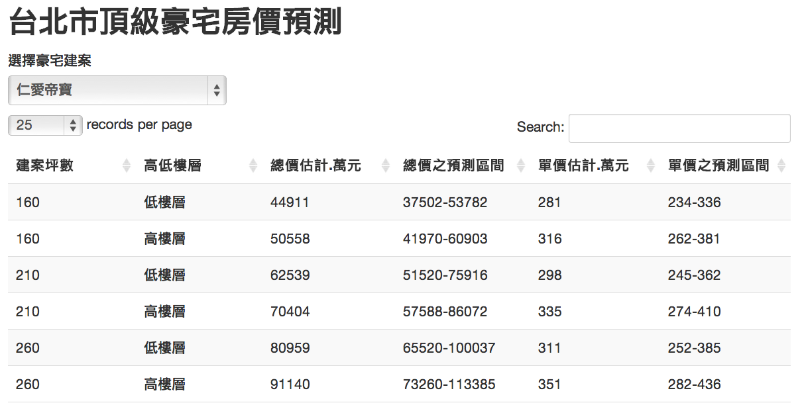

1. Simulation & testing ideas
2. Statistical analysis
3. Data mining and machine learning
4. Data visualzation (Ben's talk)
Statistics with R
Fantastic examples from R
Johnson Hsieh (謝宗震)
Postdoctoral Reseracher in Biostatistics at NTHU
When to use R?
Simulation & testing idea in R
Monty Hall problem
假設你參加一個遊戲節目，你被要求在三扇門中選擇一扇：其中一扇後面有一輛車；其餘兩扇後面則是山羊。你選擇一道門，假設是一號門，然後知道門後面有甚麼的主持人，開啟了另一扇後面有山羊的門，假設是三號門。他然後問你：「你想選擇二號門嗎？」轉換你的選擇對你來說是一種優勢嗎？


http://en.wikipedia.org/wiki/File:Monty-CurlyPicksCar.svg
http://en.wikipedia.org/wiki/File:Monty_open_door.svg
Monty Hall problem
假設你參加一個遊戲節目，你被要求在三扇門中選擇一扇：其中一扇後面有一輛車；其餘兩扇後面則是山羊。你選擇一道門，假設是一號門，然後知道門後面有甚麼的主持人，開啟了另一扇後面有山羊的門，假設是三號門。他然後問你：「你想選擇二號門嗎？」轉換你的選擇對你來說是一種優勢嗎？
B <- 10000
x <- y1 <- y2 <- rep(0,B)
for(i in 1:B){
x[i] <- sample(1:3,1)
y1[i] <- 1
y2[i] <- ifelse(x[i]==1, sample(c(2,3),1), x[i])
}
data.frame("keep"=mean(x==y1), "change"=mean(x==y2))
keep change
1 0.328 0.672
Secretary problem
要聘請一名秘書，有 \(n\) 個應聘者。每面試一人後就要決定是否聘他，如果不聘他，他便不會回來。面試後總能清楚了解應聘者的合度，並能和之前的人做比較。問什麼樣的策略，才使最佳人選被選中的機率最大。
這個問題的最優解是一個停止規則。在這個規則里，面試官會拒絕頭 \(r - 1\) 個應聘者（令他們中的最佳人選為 應聘者 $M$），然後選出第一個比 \(M\) 好的應聘者。

http://www.wallpapergate.com/wallpaper22876.html
Secretary problem
n <- 8; reps <- 10^4; rec <- rep(NA, reps)
out <- data.frame("size"=n, "cutoff"=1, "successrate"=1/n)
for(r in 2:n){
for(k in 1:reps){
a <- sample(1:n) # rank of applicants
comp <- min(a[1:r-1]) #best one befor rth applicant
sec <- a[n] #Last one
for(i in r:n-1){
if(a[i] < comp){ #choose ith applicant better than comp
sec <- a[i]
break
}
}
rec[k] <- sec
}
out[r,] <- rbind("size"=n, "cutoff"=r, "successrate"=sum(rec==1)/reps)
}
Secretary problem
out
size cutoff successrate
1 8 1 0.125
2 8 2 0.313
3 8 3 0.393
4 8 4 0.418
5 8 5 0.387
6 8 6 0.322
7 8 7 0.235
8 8 8 0.120
out[which.max(out$successrate),]
size cutoff successrate
4 8 4 0.418
Polls analysis

http://www.youtube.com/watch?v=W93QmbSB4ow
Polls analysis

訪問主題：台北市長可能人選民調
訪問時間：102 年 12 月 26 日至 30 日晚間 18：30-22：00
調查方法：電話後四碼電腦隨機抽樣，人員電話訪問
有效樣本：1,025 位 20 歲以上台北市民
抽樣誤差：95%信心水準下，抽樣誤差為±3.1 個百分點
Polls analysis
- 柯文哲 (\(p_1\))：47% ± 3.1% = (43.9%, 50.1%)
- 連勝文 (\(p_2\))：44% ± 3.1% = (40.9%, 47.1%)
- 柯與連競爭的勝率之估計為何？
n <- 1025 #樣本數
p1 <- 0.47 #柯的支持度估計
p2 <- 0.44 #連的支持度估計
d12 <- p1 - p2
s12.diff <- sqrt(p1*(1-p1)/n+p2*(1-p2)/n+2*p1*p2/n)
t <- d12/s12.diff
data.frame("差異"=d12, "標準誤"=s12.diff, "Z值"=t, "勝率"=pnorm(t))
差異 標準誤 Z值 勝率
1 0.03 0.0298 1.01 0.843
Statistical analysis in R

http://arthritisbroadcastnetwork.org/2012/04/men-with-chronic-low-back-pain-may-have-reduced-bmd/
Bone Mineral Density
美國青少年脊柱骨質密度相對成長資料
資料來源：Bachrach et al. (1999)
library(ElemStatLearn)
data(bone) # BMD of 261 north american adolescents
bone[sample(nrow(bone), 8),]
idnum age gender spnbmd
211 106 18.7 male 0.00715
88 48 15.1 female 0.02956
459 342 19.6 male 0.05395
393 267 15.0 female 0.02568
440 315 18.7 male 0.02591
223 111 22.0 male 0.03466
143 68 16.1 female 0.02667
343 214 12.8 female 0.06340
Bone Mineral Density
美國青少年脊柱骨質密度相對成長資料
觀察年齡與骨質密度相對成長之散佈圖
Bone Mineral Density
美國青少年脊柱骨質密度相對成長資料
觀察年齡與骨質密度相對成長之散佈圖
Bone Mineral Density
美國青少年脊柱骨質密度相對成長資料
以性別分組，觀察年齡與骨質密度相對成長之散佈圖
Bone Mineral Density
美國青少年脊柱骨質密度相對成長資料
利用平滑曲線法 (smooth splines) 觀察不同性別之趨勢
Bone Mineral Density
# 骨質密度成長率 vs 年齡
plot(spnbmd ~ age, data=bone, xlab="Age", ylab="Relative Change in BMD")
abline(lm(spnbmd ~ age, data=bone), lwd=2)
# 以性別分層
plot(spnbmd ~ age, data=bone, col = ifelse(gender=="male", 4, 2),
xlab="Age", ylab="Relative Change in BMD")
legend("topright", c("male", "Female"), col=c(4, 2), pch=1, bty="n", cex=1.2)
# 平滑曲線分析
sp.male <- with(subset(bone,gender=="male"), smooth.spline(age, spnbmd, df=12))
sp.female <- with(subset(bone, gender=="female"), smooth.spline(age, spnbmd, df=12))
plot(spnbmd ~ age, data=bone, col = ifelse(gender=="male", 4, 2),
xlab="Age", ylab="Relative Change in BMD", pch=1)
lines(sp.male, col=4, lwd=5)
lines(sp.female, col=2, lwd=5)
legend("topright", legend=c("male", "Female"), col=c(4, 2), lwd=2, bty="n", cex=1.2)

帝寶房價預測
- 資料來源：不動產實價登錄資料 (2012年8月 ~ 2013年9月)
- 頂級豪宅 40 / 21530 件
- 加入物件的面積大小、是否購買車位、屋齡、行政區域、樓層高低等因子配適模型
library(mgcv) #provides functions for generalized additive modelling
dat1 <- readRDS("dat1.rds")
# fit linear model
g1 <- lm(log10(總價)~面積+車位+屋齡+行政區+floor, data=dat1)
# fit addiive model with two smooth terms
g2 <- gam(log10(總價)~s(面積)+車位+s(屋齡)+行政區+floor, data=dat1)
# Compare adjusted R-squared, 越趨近1模型配適度越好
data.frame("linear model"=summary(g1)$adj.r.sq, "additive model"=summary(g2)$r.sq)
linear.model additive.model
1 0.732 0.935
帝寶房價預測

帝寶房價預測
# set dataset, 帝寶格局
new <- dat1[1:6, c(2,3,4,6,7,12)]
rownames(new) <- 1:6
new$面積 <- c(160,160,210,210,260,260)
new$車位 <- rep("有車位",6);
new$屋齡 <- rep(8, 6)
new$行政區 <- rep("大安區",6)
new$floor <- rep(c("低樓層","高樓層"),3)
# prediction
tmp <- predict(g2, newdata=new, se.fit=TRUE)
pred <- 10^cbind(tmp$fit, tmp$fit-tmp$se.fit, tmp$fit+tmp$se.fit)
data.frame("建案坪數"=new$面積, "高低樓層"=new$floor,
"總價估計.萬元"=round(pred[,1]/10000),
"單價估計.萬元"=round(pred[,1]/10000/new$面積))
帝寶房價預測 (http://goo.gl/vT1Smr)


 http://www.bio1000.com/news/1/1867.html
http://www.bio1000.com/news/1/1867.html


Shohat-Ophir, G., et al. (2012) https://www.sciencemag.org/content/335/6074/1351

Shohat-Ophir, G., et al. (2012) https://www.sciencemag.org/content/335/6074/1351
借酒澆愁愁更愁－探討果蠅求偶被拒絕與其飲酒行為之關聯性
- 學校名稱：國立科學工業園區實驗高級中學
- 作者：陳慶豐、陳昌逸； 指導老師：馮蕙卿、揭維邦
# raw data
dat <- data.frame(id=rep(1:8, each=2),
type=rep(c("glucose", "ethanol"), times=8, each=1),
group=rep(c("reject", "mate"), times=1, each=8),
ml=c(2.054, 3.677, 1.626, 3.078, 1.840, 3.378, 2.054, 2.694,
2.054, 2.993, 3.680, 2.223, 2.097, 2.608, 3.337, 1.753))
head(dat)
id type group ml
1 1 glucose reject 2.05
2 1 ethanol reject 3.68
3 2 glucose reject 1.63
4 2 ethanol reject 3.08
5 3 glucose reject 1.84
6 3 ethanol reject 3.38
借酒澆愁愁更愁－探討果蠅求偶被拒絕與其飲酒行為之關聯性
借酒澆愁愁更愁－探討果蠅求偶被拒絕與其飲酒行為之關聯性
tmp <- rep(0, 8)
for(i in 1:8) {
tmp[i] <- ((dat$ml[2*i] - dat$ml[2*i-1])/(dat$ml[2*i] + dat$ml[2*i-1]))
}
out <- data.frame("reject"=tmp[1:4], "mate"=tmp[5:8])
PI.mean <- apply(out, 2, mean)
PI.sd <- apply(out, 2, sd)
library(Hmisc)
par(cex=1.2)
errbar(x=1:2, y=PI.mean, yplus=PI.mean+PI.sd, yminus=PI.mean-PI.sd, las=1,
xaxt="n", xlim=c(0.5,2.5), xlab="", ylab="Preference index", cex=1.5, lwd=2)
axis(1, at=1:2, c("Reject", "Mate"))
abline(h=0, lty=2)
LoL口袋深度分析
口袋深度：玩家在達到多少勝場時，能夠運用的英雄數量
英雄聯盟中可供使用的英雄有100種以上，英雄與英雄之間有若干相剋情形
會使用的英雄越多被針對的程度越低，因此口袋深度是判斷一個玩家程度的重要指標
library(devtools)
install_github('iNEXT','JohnsonHsieh') # http://johnsonhsieh.github.io/iNEXT/
library(iNEXT) # Chao et al. (2014)
source_url("https://gist.github.com/JohnsonHsieh/8389618/raw/qurey.R") # 戰績網查詢
id1 <- clean_lol("ahq_Westdoor"); id2 <- clean_lol("AZB_TPA_Morning")
out <- list("Westdoor"=id1$win, "Morning"=id2$win)
names(out[[1]]) <- id1$name; names(out[[2]]) <- id2$name
lapply(out, function(x) x[x>0])
$Westdoor
卡薩丁 雷玟 易大師 古拉格斯 奈德麗 希瓦娜 賈克斯 卡力斯 希格斯 凱爾 逆命
13 3 7 7 5 1 6 3 1 2 23
潘森 塔隆 犽宿 卡特蓮娜 奧莉安娜
1 3 4 1 1
LoL口袋深度分析 (http://goo.gl/KngyYO)
out1 <- iNEXT(id1$win, endpoint=100); out2 <- iNEXT(id2$win, endpoint=100)
par(family="STHeiti")
plot(out1, ylim=c(0,40), main="口袋深度分析", xlab="勝場數", ylab="英雄個數")
lines(out2, col=2)
legend("topleft", c("ahq_Westdoor", "AZB_TPA_Morning"), col=1:2, pch=19, bty="n", lty=1)
Data mining and machine learning in R

http://www.motherjones.com/files/images/Blog_Obama_Clinton.jpg
The Obama-Clinton Divide
primary = read.csv(url("http://www.stat.ucla.edu/~cocteau/primaries.csv"), head=TRUE)
primary$black06pct <- primary$black06/primary$pop06
primary <- subset(primary, state_postal!="MI")
primary <- subset(primary, state_postal!="FL")
primary <- subset(primary, !(state_postal=="WA" & racetype=="Primary"))
primary.sub <- subset(primary, select=c(county_name, region, winner,
clinton, obama, pct_hs_grad, black06pct))
head(primary.sub)
county_name region winner clinton obama pct_hs_grad black06pct
1 Autauga S obama 1760 2268 0.787 0.1721
2 Baldwin S clinton 6259 5450 0.820 0.0964
3 Barbour S obama 1322 2393 0.646 0.4627
4 Bibb S clinton 922 755 0.632 0.2190
5 Blount S clinton 2735 617 0.705 0.0155
6 Bullock S obama 471 2032 0.605 0.6982

The Obama-Clinton Divide
library(rpart) # Recursive partitioning
library(rpart.plot) # Fancy tree plot
library(RColorBrewer) # Nice color palettes
fit = rpart(winner~region+pct_hs_grad+black06pct,data=primary)
c1 <- ifelse(fit$frame$yval==1, brewer.pal(9, "Greens")[9], brewer.pal(9, "Blues")[9])
c2 <- ifelse(fit$frame$yval==1, brewer.pal(9, "Greens")[2], brewer.pal(9, "Blues")[2])
prp(fit, type=2, extra=1, col=c1, box.col=c2, shadow.col="gray")
The Obama-Clinton Divide
How do decision tree work


Handwritten digits
library(ElemStatLearn)
data(zip.train)
dat <- zip.train[which(zip.train[,1]==3),]
tmp1 <- tmp2 <- list()
for(i in 1:9){
for(j in 1:7){
tmp1[[j]] <- zip2image(dat, i+(j-1)*5)
}
tmp2[[i]] <- do.call("cbind", tmp1)
}
im <- do.call("rbind",tmp2)
image(im, col=gray(256:0/256), xlab="", ylab="", axes=FALSE)
Handwritten digits
以Principal Component Analysis (PCA) 進行手寫學習
pca <- prcomp((dat[,-1]))
b1 <- b2 <- round(seq(-4, 4, l=5),1)
par(mfrow=c(1,3))
image(matrix(pca$center,16,16),col=gray(256:0/256), main="Mean")
image(matrix(pca$rotation[,1],16,16),col=gray(256:0/256), main="PC1")
image(matrix(-pca$rotation[,2],16,16),col=gray(256:0/256), main="PC2")
Handwritten digits
以Principal Component Analysis (PCA) 進行手寫學習
Handwritten digits
tmp3 <- tmp4 <- list()
for(i in 1:5){
for(j in 1:5){
tmp3[[j]] <- matrix(pca$center,16,16) +
b1[i] * matrix(pca$rotation[,1],16,16) +
b2[j] * matrix(-pca$rotation[,2],16,16)
}
tmp4[[i]] <- do.call("cbind", tmp3)
}
pc.im <- do.call("rbind",tmp4)
plot(pca$x[,1:2], col=3, xlim=c(-6,6), pch=19, cex=0.5, panel.first = grid(6,6,1,2))
abline(v=0, col=gray(0.2), lwd=2)
abline(h=0, col=gray(0.2), lwd=3)
points(x = rep(b1,each=6), y=rep(b2, times=6), col=2, pch=19)
image(pc.im, col=gray(256:0/256), zlim=c(-0.8,1.2), axes=FALSE, xlab="PC1", ylab="PC2")
axis(1, at=seq(0,1,l=5), labels=b1)
axis(2, at=seq(0,1,l=5), labels=b2)
Basic idea behind PCA
 http://www.nlpca.org/fig_pca_principal_component_analysis.png
http://www.nlpca.org/fig_pca_principal_component_analysis.png
{kind=link}
Resources
| Useful R websites | Basic statistics book with R | Advanced statistics book with R |

|

|
Come back for more
- Sign up at: www.meetup.com/Taiwan-R/
- Give feedback at: www.facebook.com/Tw.R.User
- MLDM Monday VOD at: www.youtube.com/user/TWuseRGroup